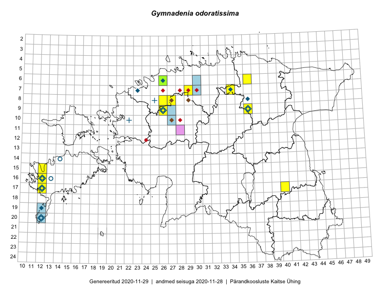

Gymnadenia odoratissima
Uuendatud: 2016-12-01
Kaardile koondatud taksonid: Gymnadenia odoratissima (L.) Rich.

Kaart põhineb 18 kirjel.
Viited andmebaasikirjetele
- Jana-Maria Habicht, Ester Valdvee: 2015-07-20: 07-34: ala
- Jana-Maria Habicht, Ester Valdvee, Tiiu Liimets: 2015-07-07: 09-36: ala
- Jana-Maria Habicht, Ester Valdvee, Tiiu Liimets: 2015-07-07: 09-36: GPS punkt
- Jana-Maria Habicht, Ester Valdvee, Tiiu Liimets: 2015-07-07: 09-36: GPS punkt
- Jana-Maria Habicht, Ester Valdvee: 2015-07-20: 07-34: GPS punkt
- Jana-Maria Habicht, Ester Valdvee: 2015-07-20: 07-34: GPS punkt
- Jana-Maria Habicht, Ester Valdvee: 2015-07-20: 07-34: GPS punkt
- Jana-Maria Habicht, Ester Valdvee: 2015-07-20: 07-34: GPS punkt
- Jana-Maria Habicht, Ester Valdvee: 2015-07-20: 07-34: GPS punkt
- Jana-Maria Habicht, Ester Valdvee: 2015-07-20: 07-34: GPS punkt
- Jana-Maria Habicht, Ester Valdvee: 2015-07-20: 07-34: GPS punkt
- Jana-Maria Habicht, Ester Valdvee: 2015-07-20: 07-34: GPS punkt
- Mari Reitalu: 2014-08-31: 17-12: ala
- Mari Reitalu: 2015-08-13: 17-12: ala
- Ulvi Selgis: 2016-07-16: 06-26: GPS punkt
- Erkki Otsman, Sergei Smirnov: 2016-07-27: 08-27: ala
- Erkki Otsman, Sergei Smirnov: 2016-07-27: 08-27: GPS punkt
- Mari Reitalu: 2014-07-22: 16-12: GPS punkt